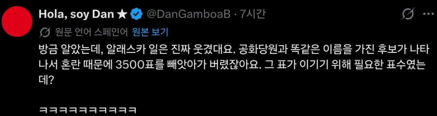
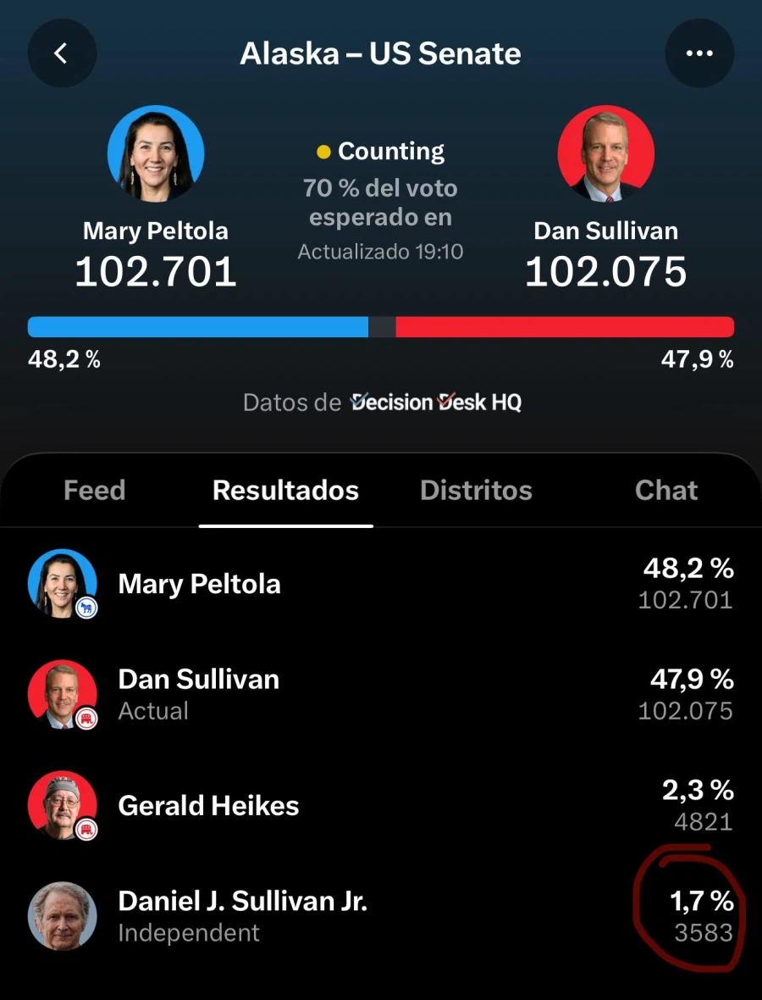

이것때문에 공화당에서 선거 보류 소송냈다가 기각당함
(사유:이런 일이 공화 민주 안가리고 너무 많아서)


이것때문에 공화당에서 선거 보류 소송냈다가 기각당함
(사유:이런 일이 공화 민주 안가리고 너무 많아서)
알래스카는 선호투표제라 제랄드를 1번으로 뽑은 표는 탈락시키고 2번 찍은 표로 감
오? 처음 알았다
알려줘서 고마워
그럼 1순위에 제랄드 2순위에 댄 찍은 표가 더 많으면 공화당이 이길 수도 있겠네?
아 근데 어차피 아직 개표 다 끝나지도 않은거 아님?
75.5% 개표됐다는데 더 까보면 알겠지
아 저 소수점 , 하고 천단위 . 거슬리네 ㅋㅋㅋㅋ
미국촌놈들이 저것까지ㅅㅂㅋㅋㅋㅋ
영어 외의 유럽 언어들은 원래 천단위 나눌 때 . 소수점에 , 씀
그래서 SI 단위계 같은 경우 아예 천단위 나눌 때 .도 ,도 안 쓰고 띄어쓰기로 나누는 게 표준이고

몰랐었는데 몰랐었는데 몰랐었는데 몰랐었는데 몰랐었는데 몰랐었는데 몰랐었는데
꼴지는 3583표를 받았는데 102표를 받고 1등이라니 조작이네요
Decimal point가 다른나라가있음
그래서 스페인어권 페소쓰는나라가면 영수증 보면 주의해야할게 한 2가지되는게 하나는 저거고 하나는 페소랑 달러기호임. 눈뜨고 코베인다 특히 아르헨
ㅇㅇ 알기야 알지. 근데 상위 두 후보는 천단위 기호를 쓰는데, 하위 후보는 안 쓰는 게 더 꼴받아 ㅋㅋㅋㅋ
그나저나 스페인권 페소 기호는 첨 알았네. 찾아보니 여기가 원조고 달러가 이 기호를 따라 썼구나. 덕분에 지식이 늘었다 ㄱㅅㄱㅅ ㅋㅋㅋ
ㅋㅋㅋㅋ이야 이런건 노리고 상대측에서 심어놓는건가???
ㅋㅋㅋㅋ
후보이름도 헷갈리는 무지랭이 컷 ㅋㅋㅋㅋ
소송이 컷된 이유는 주 선거에서 연방 정부가 소송 주체가 될 수 없기 때문임
비슷한 이름의 무소속 후보가 나오는게 빈번한것도 빈번한건데
제랄드가 5천표 가까이 가져간거 보면
그냥 후보 단일화 했으면 되었던거 아님? ㅋㅋㅋ